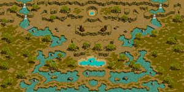
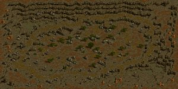
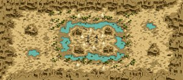
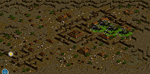
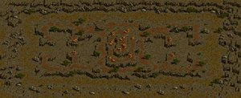

Gvの抵抗装備についてGvでは以下の抵抗装備が必要。
１．ネクロ対策（呪い・低下・状態異常） いくつ必要かは→の計算機で、詳細は↓の一覧表で。 呪い抵抗は完備必須。 毒舌、狂気、レクイエム（PTHなどの時間回復カット機能）、蟻地獄などを防ぐ。 また、烈火をくらう確率を減らす（30％程度まで？）効果があると言われている。 低下系抵抗は完備が望ましい。 ダークネス、嫌味、悪態、悪口、ディスペによる補助はがしなどを防ぐ。 エビで170％↑するため、エビを切らさないという前提でカット可能。 ただしリスクは小さくないので十分注意を。 状態異常抵抗はカット可能だが、最低ブレをもらって完全に防げる程度は必要。 ブレで160％↑なので、計算して用意しよう。もちろん完備できればベスト。 混乱、暗闇、石化、コールドなどさまざまな状態異常を防ぐ。 アーチは花で打ち消されるので計算に入れない方がよい。 いずれにしてもBIS補助やアーチに頼り過ぎないように。 BISは頑張って上書きしよう。 ２．ノックバック抵抗（後退転倒抵抗） 完備必須。 悪魔のドローやランサーの旋風突き（はじき出すスキル）等を防ぐのに必要。 詳細は下表にて。 100↑あれば完全に防げる。 最近のGvでは完備している人が多いため、 完備してない人が集中的に狙われる傾向にある。 足と指で主にそろえる。 ３．水抵抗・火抵抗 ドラツイ・氷雨の水系が痛いので、水抵抗を優先して上げるが、 最近のGvではスレンダーやDXU矢の関係上、火弱化＋速度スクリューの 組み合わせが可能なため、火抵抗も重要性が高くなっている。 総じて180↑あれば花投げされても90↑を確保できるが、それは大変厳しいので、 まずは素で90↑を目指してみよう。 ダブリン、リングなど指の他、Uへのエンチャなどでも可。 また善の性向を一定以上上げることで各抵抗がつくようになり、 比較的上げやすくなった。 火抵抗、水抵抗 ： 性向値50以上で性向値×0.5％がそれぞれつく 光抵抗 ： 性向値30以上で性向値×1.0％がつく ４．致命打抵抗 100↑必要。 ちなみに、決定打抵抗はダメがルートされるため、Gvでは基本的に不要と考えられる。 【2009/05/22 追記】重要 ネクロ３種抵抗と同じく、知恵とカリスマによる補正が効く模様。 これにより、装備で必ずしも100↑用意しなくてもよくなる。 必要な数値は→↑計算機にて計算の事。 決定打抵抗の必要数値は致命打抵抗と同じなので、狩り装備などの参考にされたし。 ５．薬回復 抵抗装備ではないが、参考までに。 アスヒでの回復が多くなった最近のGvでは影が薄くなりつつあるが、範囲攻撃からの 回復を考えた場合、アスヒの負担が大きいのでやはり必要であろう。 250↑を確保したい。 各抵抗の数値範囲を以下にまとめておく。 装備を探す際の参考にしてほしい。
もう一つ、 耳のOP説明文が悪く、どれがどの抵抗になっているか分かりにくいので、以下にまとめる。
|
2010/12/20 ・装備による抵抗値入力と、結果の過不足表示追加。 ・魂切りのSLv設定項目を追加。 ［注意事項] 霊術師の魂切りは 呪い・低下・状態異常の各抵抗をSLv + 5（％）下げます。 が、現在以下の不明な点があります。 確認の上ご利用ください。 １．魂切りによる抵抗低下数値は上限なしで計算していますが 上限が存在する可能性があります。 ２．死香による低下値と単純に足し算で計算していますが、 そうでない可能性があります。 上記不明点につきご存知の方は連絡いただけると幸いです。 |
| マップ名 | 火 | 水 | 風 | 土 | 光 | 闇 | 備考 | |
| バヘル大河／２粒の涙 （150×150） |
 | 85 | 85 | 55 | 35 | 60 | 60 | 中央に４箇所（２セット）ワープ有 火抵抗・水抵抗ともに激しく下がる |
|---|---|---|---|---|---|---|---|---|
| エルベルク山脈／岩の谷 （150×150） |
 | 75 | 75 | 75 | 35 | 80 | 40 | |
| デフヒルズ／砂漠の遺跡 （170×150） |
 | 50 | 90 | 80 | 55 | 50 | 50 | 全マップ中水抵抗が最も下がる ドラツイマップ |
| ナラダ平原／２つの丘 （160×110） |
50 | 60 | 70 | 70 | 50 | 50 | ||
| Ruined Sbain Fortress （200×200） |
 | 45 | 45 | 45 | 45 | 45 | 45 | |
| ソゴム山脈／赤い丘 （160×130） |
 | 0 | 0 | 0 | 0 | 0 | 0 | 抵抗低下なしのマップ |
| SLv | 外れる部位 | ※必要回数 |
|---|---|---|
| ～10 | 背／耳 | 1 |
| ～20 | ＋ 首 | 2 |
| ～30 | ＋ 足 | 3 |
| ～40 | ＋ 頭 | 4 |
| ～50 | ＋ 手 | 5 |
| ～60 | ＋ 鎧 | 6 |
| ～70 | ＋ 指 | 7 |
| 71～ | ＋ 盾／十字架（弾丸類は除く） | 8 |
| 防げるスキル・異常 | 効果 | 備考 | |
| 呪い系抵抗 万病 霊薬 祝福の聖水 |
毒舌 | レベ低下 | アーチで85％↑ |
| 狂気 | 難易度２以下スキルのみ使用可 防御低下 攻撃力増加 |
||
| レクイエム （時間回復） |
悪魔のリアクションスキル。 回復量を減らす（SLv×20％） |
||
| 蟻地獄 | 対象を回復した時に、 回復量に比例したダメージが入る |
||
| 呪い | POTが使えなくなる（未実装？） | ||
| チャーミング | Gv未実装？ | ||
| 低下系抵抗 万病 霊薬 元気回復剤 |
ダークネスイリュージョン | 力と知識、敏捷と知恵をそれぞれ反転 | アーチで90％↑ エビ55で170％↑ |
| 嫌味 | 命中率・回避率低下 | ||
| 悪態 | 攻速・移速・攻撃力・防御力低下 | ||
| 悪口 | 魔法抵抗低下 | ||
| マジックディスペリング | 各種補助（ブレエビエンヘイ）をはがされる | ||
| 知能低下 | 自動リロ、パッシブスキル、自動攻撃（スキルセット左下）が発動しなくなる | ||
| 状態異常系抵抗 万病 霊薬 中和剤 強化解毒剤 |
混乱 | 難易度１のスキルのみ使用可 | アーチで95％↑ ブレ55で160％↑ |
| コールド | 攻速・移速低下 青くなる | ||
| フリーズ | 動きが止まる 青くなる | ||
| スタン | 動きが止まる 白いパチパチしたのが出る | ||
| 毒 | 一定時間間隔でダメを受ける | ||
| 暗闇 | 自分の周りしか見えなくなる 黒いサングラスが出る |
||
| 石化 | 行動不能 防御力向上 灰色になる |
||
| 睡眠 | 行動不能 寝てるマークが出る |
||
| ノックバック抵抗 | ドローボディ | 悪魔の引っ張るスキル |
|
| 旋風突き | ランサのスキル |
||
| デザートブラスト | ランサのスキル |
||
| ワールランニング | ランサのスキル |
||
| ワーリングアサルト | ランサのスキル |
||
| マルチプルツイスター | ランサのスキル |
||
| スピンアライジング | ランサのスキル |
||
| ノッキングショット | 剣士のスキル |
||
| ジャンプ | 戦士のスキル |
||
| 烈風撃 | 武道のスキル |
||
| 即死抵抗 | モータルクラウド | 一定確率で即死 頭の上にオレンジのドクロマークが出る |
|
| 現在対策不可能 | 烈火の怒り | 一定時間行動不能になる |
SLｖ１で 成功率76.5％、継続時間9.9秒 SLｖ50で 成功率150％、継続時間5秒 ※呪い抵抗で成功率を減らせる模様 |
| 死の香り | 呪い・低下・状態異常抵抗を下げる |
最大75％ | |
| 裏切りの契約 | 装備が外れる 前提として「魔の約定」を入れておく必要がある 万病飲んでもはずれたまま（バグ？） リログするとなおるという噂あり。 |
魔の約定（かかるとエンチャみたいなわっかが頭の上に回る）は万病で治せるので、わっかがまわったらすぐに万病を飲めば一応対抗可能。 | |
| レクイエム （即時回復） |
悪魔のリアクションスキル。 アスヒ・ヒーリングなどの即時回復を無効にする。実際には一瞬回復したように見えるが、次の瞬間元のHPに戻る。 |
・万病を飲む ・レストで上書きする などの方法で回復可能。 |